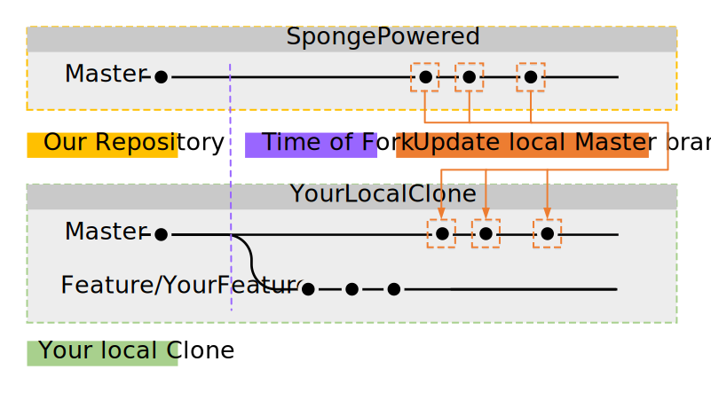

Comment utiliser Git(Hub)¶
Si vous souhaitez participer au développement de Sponge, que vous avez un super ajout à l’API, ou que vous voulez améliorer notre documentation, vous devrez vous familiariser avec Git et GitHub. i vous connaissez déjà le forking, les branches, les issues, les pull requests et les commits, vous pouvez passer cette page, si vous ne comprenez pas ce que vous lisez, alors continuez.
Note
Ce guide suppose que vous avez lu Installer Git et que vous avez un client Git sur votre machine.
Le Concept de Base de Git et GitHub¶
Git permet à de nombreux développeurs différents de développer un logiciel en même temps. GitHub est un site où les développeurs peuvent collaborer et partager leur travail avec les autres. GitHub repose sur Git.
Astuce
Si vous n’êtes pas familier avec le vocabulaire de Git et GitHub, jetez un œil à la page glossaire sur Github.

Dans ce cas le repo est nommé SpongePowered, possède deux branches nommées master et feature 1 et également quelques commits sur les deux branches.
Mettons ces termes dans leur contexte - en commençant avec le dépôt (repository, ou repo). Le dépôt est l’endroit où un projet stocke ses fichiers. Les dépôts de SpongePowered sont sur GitHub. Toutefois, ce dépôt possède certaines restrictions d’accès pour le préserver contre les modifications indésirables ou malveillantes. Vous ne pouvez pas simplement apporter de modifications vous-même, puisque le dépôt est en lecture seule pour les utilisateurs réguliers. Maintenant vous pouvez vous demander comment vous êtes censés faire des changements et déposer des propositions. Et bien, c’est là où les forks entrent en jeu. Vous pouvez récupérer une copie des dépôts SpongePowered, et faire vos changements ici. Lorsque vous avez terminé, vous l’ouvrez en tant que Pull Request (PR) sur notre dépôt. Vos propositions d’ajouts et de changements peuvent alors être examinés, et l’équipe vous dira si quelque chose ne va pas, ou doit être amélioré, et fusionnera éventuellement la PR finale.
Voici un bref résumé de la procédure décrite plus haut, avant d’entrer dans les détails :
- Créez un fork du dépôt de votre choix
- Clonez le sur votre machine locale
- Créez une nouvelle branche
- Apportez les changements désirés
- Testez si tout fonctionne
- Faîtes un commit avec les changements
- Synchronisez-les sur GitHub
- Proposez les changements dans une PR aux dépôts de SpongePowered
- Modifiez votre PR si nécessaire
- Votre PR est fusionnée à la branche master par l’équipe
Les détails s’il vous plaît !¶
1. Créer un fork d’un dépôt¶
Note
Cette étape est uniquement requise si vous n’avez pas les droits de push sur le dépôt sur lequel vous faîtes des changements. Si vous travaillez sur votre propre dépôt, aucun fork n’est nécessaire. Il suffit de sauter cette étape et de cloner directement. Si vous faites des changements à Sponge et que vous n’êtes pas de l’équipe, cette étape est requise.
Maintenant que vous connaissez le concept de base, nous allons discuter des détails. Tout d’abord, vous devez fork le dépôt sur lequel vous voulez apporter des modifications. Cela peut être fait sur GitHub.com, où vous trouverez un bouton Fork en haut de la page des dépôts. Après avoir appuyé dessus, GitHub va faire quelques travaux et va vous présenterr un clone du dépôt original pour vous. Vous noterez que le clone est maintenant situé à VotreCompteGitHub/NomDuDépôtCloné. Bon, première étape terminée.
Note
Toutes les branches du dépôt original seront fork aussi, vous recevrez un clone exact du dépôt.

2. Cloner le Fork sur Votre Machine locale¶
Maintenant vous avez besoin de récupérer ce fork sur votre machine locale pour effectuer vos modifications. Ouvrez le client Git de votre choix (Installer Git) et clonez votre fork sur votre machine locale. Le client va vous demander dans quel dossier le stocker. La deuxième étape est terminée, bravo !
Note
La plupart des étapes peuvent se faire via l’interface graphique de votre choix. Si vous êtes expérimentés avec une interface en lignes de commandes, alors vous pouvez l’utiliser aussi. Chaque étape vous montrera les commandes requises pour obtenir le résultat souhaité.
Alternativement vous pouvez faire ceci via CLI (interface en lignes de commandes, CMD ou powershell sur windows). Notez que vous avez besoin de créer le dossier où tout sera cloné vous-même avant de taper cette commande :
git clone git://github.com/YourGitHubAccount/ClonedRepoName.git

3. Créer une Nouvelle Branche¶
Maintenant que vous avez un clone local de votre fork, il est temps de créer une branche sur laquelle travailler. Les branches ont été conçues pour être capable de développer et de tester différentes fonctionnalités ou ajouts en même temps, sans causer de problèmes et d’erreurs dues aux interférences des additions. C’est fortement conseillé de ne pas faire vos modifications sur la branche master. À la place, créez une nouvelle banche vous-même (avec un nom judicieux) et faîtes vos modifications ici.
Cela implique de créer une nouvelle branche tout d’abord, alors allons-y ! Vous pouvez faire ceci via votre client (il doit y avoir un bouton créer une branche quelque part), ou vous pouvez utiliser le CLI avec git :
git checkout -b [name_of_your_new_branch]
Cela va créer une branche avec le nom de votre choix et basculer vers celle-ci. Tous les changements que vous allez faire seront sur cette branche. Si vous avez besoin de passer à une autre branche (par exemple master), réutilisez simplement cette commande. La troisième étape est terminée ! Bon travail jusqu’à présent ! Pour obtenir une vue d’ensemble de vos branches, jetez un œil à votre client git ou utilisez :
git branch

Maintenant il est temps de faire vos modifications. Utilisez l’éditeur ou l’IDE de votre choix pour faire ceci.
4. Tester si Vos Modifications Fonctionnent¶
Pour SpongeAPI et les implémentations vous devez exécuter gradle compileJava. Passez à l’étape suivante si ça se termine sans erreur. Sinon, apportez les corrections appropriées et essayez encore.
Pour SpongeDocs vous pouvez simplement soumettre votre PR. Elle sera build automatiquement et révélera les erreurs possibles. Une autre option est de build les docs localement. Jetez un oeil au Readme.md sur les Docs pour plus d’informations.
5. Faîtes un Commit avec les Changements¶
Lorsque vous avez terminé, vous aurez besoin de regrouper les changements en un seul paquet (un commit) et les mettre dans la branche. Encore une fois, votre client git vous aidera. Ajoutez un nom significatif à votre commit et une courte description, si nécessaire. Cela peut également se faire via CLI :
Collectez d’abord tous les fichiers et dossiers que vous voulez mettre en un commit :
git add <file>
git add <folder>
Maintenant que les fichiers sont ajoutés à votre liste de changements que vous souhaitez inclure dans le commit, faîtes juste
git commit
Cela va ouvrir une fenêtre de texte, où vous pourrez ajouter un message si vous le désirez. Regardez l’image ci-dessous. Vous remarquerez que vos commits sont toujours stockés en local et pas sur votre fork sur GitHub.
Note
Vous pouvez avoir plusieurs commits dans une PR. Allez juste de l’avant et changez tout ce dont vous avez besoin et faîtes un commit des changements. Vous pourrez fusionner les commits en un seul commit plus tard.
Donc maintenant, la sixième étape est faite. On y est presque !

6. Synchroniser avec GitHub¶
Maintenant nous avons besoin d’obtenir les changements sur notre fork sur GitHub. Tout ce que nous avons fait jusqu’ici est uniquement stocké localement pour l’instant. Comme toujours, vous pouvez utiliser votre client git pour faire ceci (il y a un bouton quelque part dans votre GUI), ou vous pouvez le faire via CLI :
git push <remote> <branch>
Dans ce cas, ça doit être :
git push origin feature/YourFeature

7. Proposez les changements dans une PR aux dépôts de SpongePowered¶
Vous pouvez soit aller sur votre page de forks sur GitHub.com (il doit y avoir une fiche en haut de la page pour vous guider), ou vous pouvez utiliser votre client GitHub pour créer une pull-request. Le client officiel GitHub for Win utilise le coin en haut à droite de la fenêtre pour cela.

8. Modifiez votre PR si Nécessaire¶
Si nous voulons que vous apportez des changements à votre PR, alorsr faîtes juste plus de commits sur la branche créée ci-dessus. Les nouveaux commits seront ajoutés à la PR automatiquement.
9. Votre PR est Fusionnée¶
Et voilà. Tout est terminé ! Bon boulot !
Git Avancé¶
Squashing avec Rebase¶
Disons que vous avez terminé vos ajouts au dépôt, et supposons que vous avez fait 137 commits en tout. Votre historique de commits paraîtra certainement encombré. Ce serait une honte s’ils étaient tous enregistrés dans le dépôt, n’est-ce pas ? Trop de commits triviaux encombrent également l’historique de commit du projet. Heureusement, Git a un bel outil pour contourner cela, c’est appelé un rebase. Faire un rebase peut prendre vos 137 petits commits et les transformer en un seul gros commit. Génial, n’est-ce pas ? Au lieu de réinventer la roue, nous allons juste vous passer un lien vers un tutoriel de squashing très court et facilement compréhensible :
(Anglais) Gitready: Squashing avec Rebase
Voici ce que ça fait, bien visualisé :

Mettre en Place un Remote¶
Naturellement, le dépôt original est le parent direct de votre fork et votre fork est le parent direct de votre clone local. Cependant le dépôt original n’est pas le parent direct de votre clone. Ce n’est pas un problème en premier lieu, mais ça vous empêche de mettre à jour votre clone sur les derniers changements du dépôt original. Si vous mettez en place le dépôt original en tant que remote (lire : « parent ») de votre clone, vous serez en mesure de saisir toutes les modifications apportées à ce dépôt et les appliquer à votre clone local. Regardez ci-dessous pour voir comment la récupération et la mise à jour fonctionnent.

Bien. Cette étape est faite via CLI car la plupart des GUIs manquent cette fonctionnalité (plutôt avancée) :
git remote add upstream https://github.com/ORIGINAL_OWNER/ORIGINAL_REPOSITORY.git
Si vous n’êtes pas sûrs de si ça a fonctionné comme prévu ou si vous voulez vérifier quels remotes sont actuellement définis, vous pouvez vérifier via :
git remote -v
la sortie devrait ressembler à :
origin https://github.com/YOUR_USERNAME/YOUR_FORK.git (fetch)
origin https://github.com/YOUR_USERNAME/YOUR_FORK.git (push)
upstream https://github.com/ORIGINAL_OWNER/ORIGINAL_REPOSITORY.git (fetch)
upstream https://github.com/ORIGINAL_OWNER/ORIGINAL_REPOSITORY.git (push)
Note
Si vous voyez l’avertissement fatal: The current branch VotreNomDeBranche has no upstream branch., alors la branche peut ne pas être sur le remote upstream. Cela peut arriver si c’est la première fois que vous faîtes un push d’un commit pour la nouvelle branche. Pour faire un push de la branche actuelle et définir le remote en tant qu’upstream, utilisez git push --set-upstream origin VotreNomDeBranche.
Faire un Rebase¶
Disons que vous avez fait quelques changements à la branche désirée, mais entre temps quelqu’un d’autre à mis à jour le dépôt. Cela signifie que votre fork et votre clone ne sont pas à jour. Ce n’est pas un gros problème, mais pour éviter les problèmes lors de la fusion de vos ajouts plus tard, il est fortement recommandé de rebase vos changements contre les derniers changements du dépôt original. Si vous n’avez pas encore définit le dépôt remote, faîtes-le avant d’essayer de rebase.
Un rebase réussi nécessite plusieurs étapes :
1. Récupérer les Changements sur le Dépôt Distant¶
D’abod vous devez récupérer les changements sur le dépôt distant (remote). C’est (encore) fait via CLI :
git fetch upstream
Cela va ajouter tous les changements du upstream remove et les mettre dans une branche temporaire upstream/master.
2. Fusionner les Changements Distants localement¶
Maintenant nous devons sélectionner notre branche locale master :
git checkout master
Après cela, nous allons fusionner les changements qui figurent dans upstream/master dans notre branche locale master :
git merge upstream/master
Bien, voici ce que nous avons fait jusqu’ici :
3. Rebase la Branche Locale contre la Branche Master mise à jour¶
La prochaine étape est de rebase la branche locale sur laquelle vous travaillez contre la branche locale master. Nous devons passer à notre branche de travail (ici : feature/yourfeature) et effectuer un rebase. Cela se fait via :
git checkout feature/yourfeature
git rebase master
Cela va rembobiner notre brranche, ajouter les commits depuis le master et puis appliquer de nouveaux nos propres changements. Le résultat ressemble à ceci :

4. Push le Tout à votre Fork¶
La dernière chose que nous devons faire est de push le tout au fork. Si vous avez déjà créé une PR, elle sera mise à jour automatiquement :
git checkout master
git push -f
git checkout feature/yourfeature
git push -f

Vous l’avez fait, génial ! Bon travail, bien joué et merci pour le vol Rebase-Air !